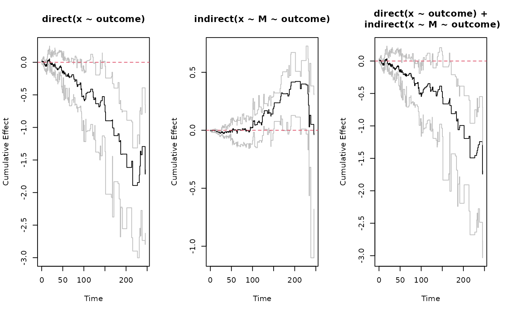

Dynamic Path Analysis
dpa.RdDynamic Path Analysis
Usage
dpa(
out.formula,
mediator.formulas,
id,
data,
boot.n = 100,
method = "aareg",
progress_bar = FALSE,
...
)Arguments
- out.formula
Survival formula for Aalen's additive hazards model.
- mediator.formulas
Mediator regression formula (in case of a single mediator), or a list of regression formulas (in case of multiple mediators). The formulas must be ordered according to Directed Acyclic Graph Structure (see Details).
- id
character string indicating which column of 'data' corresponds to the subject ID. Bootstrapping will be performed on this id.
- data
Data set in counting process format. In particular the data should contain a "start", "stop" and "event" column along with any mediators and baseline covariates.
- boot.n
Number of bootstrap samples.
- method
The underlying implementation of Aalen's additive regression model. Defaults to "aareg", which relies on the survival::aareg() implementation, while method = "timereg" uses the timereg::aalen() implementation.
- progress_bar
Boolean. If TRUE, show progress bar. Defaults to FALSE.
- ...
other parameters passed to the Aalen's additive hazards model implementation. If method = "timereg", then ... will be passed to timereg::aalen(), while if method = "aareg", then ... will be passed to survival::aareg(). If ... contains parameters that don't belong to the formalArgs of the corresponding implementation then those parameters will be ignored.
Value
Object of class `dpa` with following fields:
- coefs
list of estimated coefficients from each of the regressions listed in out.formula and mediator.formulas.
- boot.coefs
list of bootstrap estimates corresponding to coefs. This stores all the bootstrap estimates to facilitate calculation of direct, indirect and total effects along with bootstrap confidence intervals.
- meta
a list keeping track of responses and covariates of each of the out.formula and mediator.formulas. Also keeps track of all variable types and level names in case of factors.
Details
dpa performs Dynamic Path Analysis of a Directed Acyclic Graph (DAG). The out.formula
can have as covariates all mediators listed in mediator.formulas. The mediator.formulas must obey the
following DAG structure rule: The response of the k-th formula cannot appear as covariate in any of the formulas
k+1, ..., length(mediator.formulas).
Examples
library(dpasurv)
data(simdata)
set.seed(1)
# Perform dynamic path analysis:
s <- dpa(survival::Surv(start,stop,event)~M+x, list(M~x), id="subject", data=simdata, boot.n=50)
# Calculate cumulative direct, indirect, and total effects:
direct <- effect(x ~ outcome, s)
indirect <- effect(x ~ M ~ outcome, s)
total <- sum(direct, indirect)
# Plot the effects using basic graphics:
par(mfrow=c(1,3))
plot(direct); abline(h=0, lty=2, col=2)
plot(indirect); abline(h=0, lty=2, col=2)
plot(total); abline(h=0, lty=2, col=2)

# Plot the effects using ggplot2 graphics:
ggplot.effect(list(direct, indirect, total))